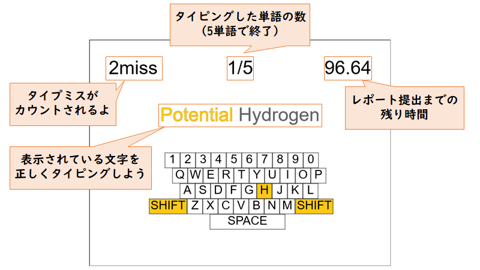
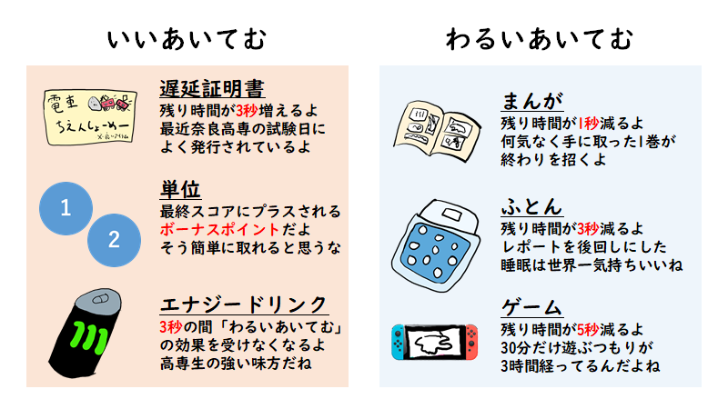

～あらすじ～
時は現代，とある高専の高専祭。
人々はそれぞれのアピールポイントを胸に企画や創造に力を入れていた。
そしてここにも一人，とある創造を成そうとしている者がいる...
此の者の抱える創造すべきものとは，そう，まさに「レポート」であった！
果たして此の者は高専祭当日に提出というなかなかに鬼畜な期日指定のレポートに筆を走らせ，提出期限までに学校へたどり着くことができるのか！？
何故余裕を持ってレポートを完遂しなかったのか，そんな疑問など甚だしい！
．．．行くのだ。
進級を賭け(駆け)，
あまつさえは，
好成績を欲しいがままにするのだ！！
～遊び方～
ゲームの遊び方は至って単純！
レポートを完成させるべくタイピングを行い，
レポートを提出すべく駅から学校までダッシュする！
簡単でしょ？
- タイピング画面について"" -

- ダッシュタイムの"あいてむ" -

～シラバス～
【最終成績】
(WPS×15-タイプミス/2)+(最終残り時間＋取得した単位数)
フォント：http://pm85122.onamae.jp/851mkpop.html